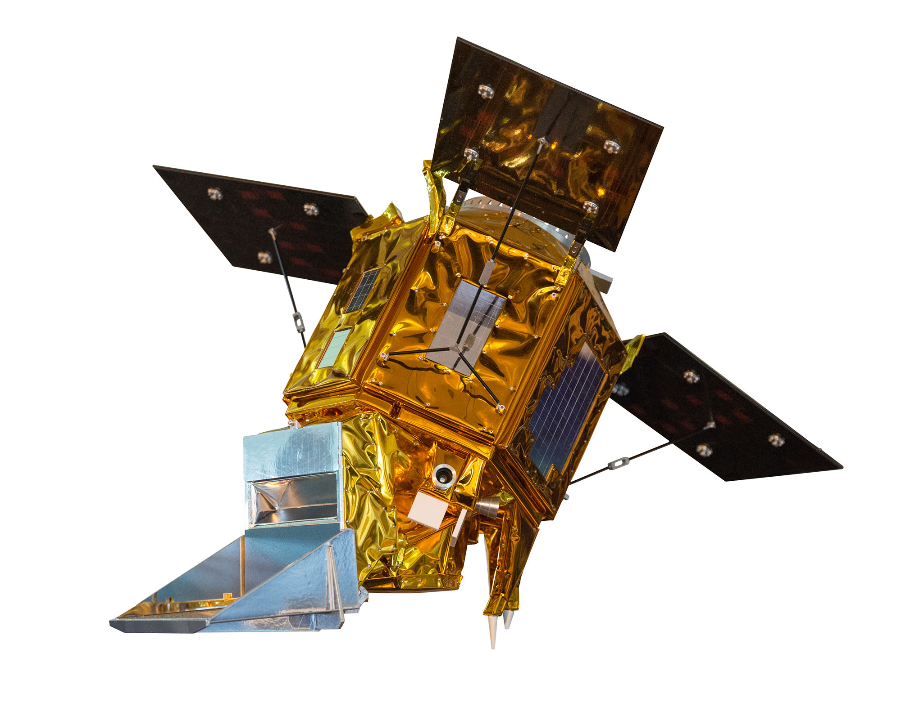
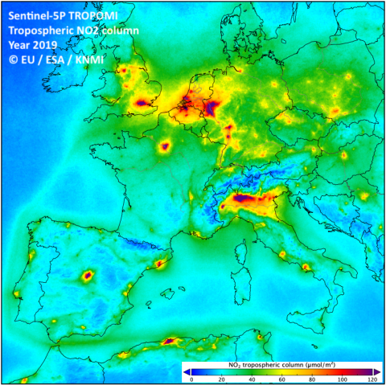

Spatiotemporal Analysis
Sentinel-5P
The Copernicus Sentinel-5 Precursor mission is the first Copernicus mission dedicated to monitoring our atmosphere. Copernicus Sentinel-5P is the result of close collaboration between ESA, the European Commission, the Netherlands Space Office, industry, data users and scientists. The mission consists of one satellite carrying the TROPOspheric Monitoring Instrument (TROPOMI) instrument. The TROPOMI instrument was co-funded by ESA and The Netherlands..
The main objective of the Copernicus Sentinel-5P mission is to perform atmospheric measurements with high spatio-temporal resolution, to be used for air quality, ozone and UV radiation, and climate monitoring and forecasting.
Tropomi NO2
Nitrogen dioxide (NO2) and nitrogen oxide (NO) together are usually referred to as nitrogen oxides (NOx = NO + NO2). They are important trace gases in the Earth’s atmosphere, present in both the troposphere and the stratosphere. They enter the atmosphere as a result of anthropogenic activities (notably fossil fuel combustion and biomass burning) and natural processes (such as microbiological processes in soils, wildfires and lightning). During daytime, i.e. in the presence of sunlight, a photochemical cycle involving ozone (O3) converts NO into NO2 (and vice versa) on a timescale of minutes, so that NO2 is a robust measure for concentrations of nitrogen oxides.
The TROPOMI NO2 processing system is based on the algorithm developments for the DOMINO-2 product and for the EU QA4ECV NO2 reprocessed dataset for OMI, and has been adapted for TROPOMI. This retrieval-assimilation-modelling system uses the 3-dimensional global TM5-MP chemistry transport model at a resolution of 1x1 degree as an essential element.
Some Observations
In March-April 2020, during the tight phase of the lockdowns in Europe, very strong reductions of satellite NO2 levels of the order of 40-50% were recorded in large cities of Spain, Italy and France, and moderate reductions of the order of 20% in Belgian cities, like Brussels and Antwerp (Figure 1 and 2). The main reason is well identified: vehicular traffic, one of the main sources of nitrogen oxides (NO and NO2), has been dramatically reduced during the first phase of the lockdown period. The analysis has also drawn attention to the remarkable technological progress made to measure pollution – satellite measurements made possible to monitor NO2 levels in near real-time globally.
The impact of meteorology on NO2 concentrations is also important and should not be overlooked. This is why it is necessary to analyse data over sufficiently long periods, in order to better estimate the impact of human activity. By comparing the monthly average of 2019 and 2020, we estimate an uncertainty on the COVID-19 induced reduction of around 15–20%. The decreases observed by the satellites and the decreases observed in measuring stations in different cities correspond well if we take into account their uncertainties and meteorological variability